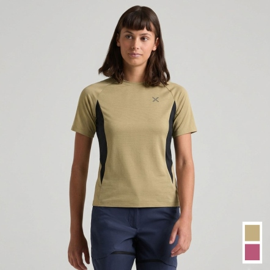
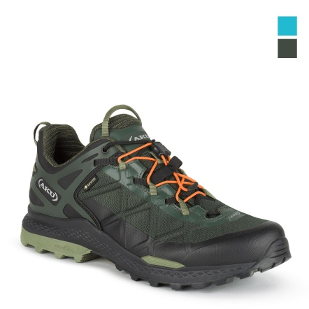
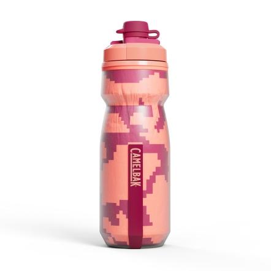
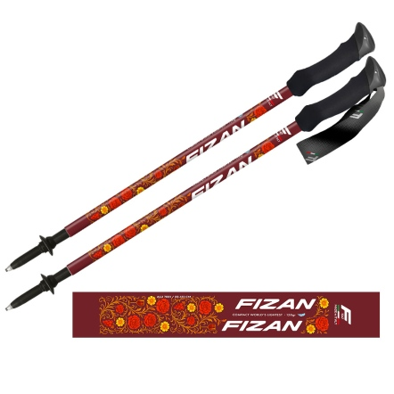
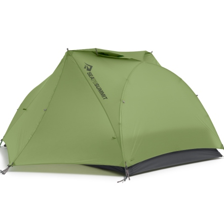

服飾
MONTURA Rise 排汗上衣
適合練習商品賣點整理、穿搭情境、門市導購與社群貼文。
墾趣面對商品品項多、規格複雜、品牌活動頻繁、會員經營需求提升與跨部門資訊彙整量大的營運現場，本課程把 AI 設計成可複製的工作方法，而不只是單次工具示範。
商品企劃、行銷業務、會員經營、電商營運、門市管理、行政營運等職能同仁。課堂以跨部門共同實作為設計，讓商品知識、會員分群、行銷內容與營運流程在課堂中直接對接實際工作場景。
課程以講授、示範、分組實作與成果發表進行，讓學員在課程中完成可供企業後續使用的知識模板、溝通腳本、內容素材與流程原型。主要以 Google Workspace 相關 AI 工具作為培訓載體，因其能銜接企業既有文件、表單、雲端資料、郵件與協作流程，可直接應用於商品知識整理、會員資料清理、分眾內容生成、營運報表分析與通知流程自動化。
每一天都是獨立講義，也會延續同一組商品案例，讓學員從 AI 應用藍圖一路做到可落地的流程改善清單。
這五個商品橫跨服飾、鞋類、水瓶、登山杖與帳篷。每天的 Prompt 都會回到這些商品，讓學員練習把 AI 用在真實商品與真實會員情境。

適合練習商品賣點整理、穿搭情境、門市導購與社群貼文。

適合練習規格比較、客群分級、登山情境推薦與 FAQ。

適合練習會員加購推薦、短文案、LINE 推播與電商商品頁。

適合練習新手教育、門市話術、比較推薦與短影音分鏡。

適合練習高單價商品說明、露營客群、活動企劃與知識庫。
從墾趣商品、會員、內容與營運流程痛點出發，建立同仁對 AI 應用場景的共同語言，並排定各部門最值得先做的 AI 任務。
你是戶外用品零售業的 AI 導入顧問。請協助墾趣的【部門名稱】盤點日常工作中最適合導入 AI 的任務。請依照以下欄位輸出表格：工作任務、目前資料來源、人工處理痛點、可用 AI 協助的方式、預期節省時間、導入難度、優先順序。請優先考慮商品企劃、會員經營、內容產製、營運報表與跨部門通知。
請以墾趣的五個商品為案例：MONTURA Rise 排汗上衣、AKU ROCKET DFS GTX 登山鞋、CamelBak Podium 運動水瓶、FIZAN 登山杖、Sea to Summit Telos 3 帳篷。請幫我整理每個商品可以用 AI 支援的工作情境，包含商品知識整理、門市導購、會員分群推薦、社群圖文、短影音腳本、報表與流程自動化。
把複雜的戶外商品規格轉成同仁看得懂、門市說得出、會員聽得進去的商品知識卡、比較表、FAQ 與導購模板。
請幫我把以下商品整理成墾趣門市與電商都可使用的商品知識卡。商品：AKU ROCKET DFS GTX 登山鞋。請輸出：1. 一句話定位 2. 適合客群 3. 三個主要賣點 4. 使用情境 5. 與一般健走鞋的差異 6. 顧客常見問題與回答 7. 門市導購提醒。語氣要專業、好懂，避免過度誇大。
請用表格比較以下五個墾趣商品：MONTURA Rise 排汗上衣、AKU ROCKET DFS GTX 登山鞋、CamelBak Podium 運動水瓶、FIZAN 登山杖、Sea to Summit Telos 3 帳篷。欄位包含：商品角色、主要使用場景、適合客群、顧客購買理由、可搭配銷售商品、門市一句話推薦。
你是墾趣資深門市顧問。請針對「第一次要買登山杖的新手顧客」設計 FIZAN 登山杖的導購對話腳本。請包含：開場提問、需求判斷、產品推薦、使用方式提醒、常見疑慮回覆、結尾加購建議。語氣自然，不要像硬銷。
將會員資料整理成可行動的標籤，針對新手露營、登山客、家庭客、鞋類客群等分眾生成推薦與溝通腳本。
你是墾趣會員經營顧問。請根據戶外用品零售情境，設計一套可在 Google Sheets 使用的會員分群標籤。請至少包含：新手露營、登山健行、越野跑、親子戶外、鞋類保養、水瓶補給、高單價裝備潛力客。每個標籤請說明判斷條件、適合推薦商品、適合溝通內容、建議追蹤欄位。
請針對「近期購買登山鞋、但尚未購買登山杖」的墾趣會員，撰寫 3 則 LINE 推播訊息，推薦 FIZAN 登山杖。請分別對應：新手登山、週末健行、準備長路線。每則 80 字以內，包含標題、正文、行動呼籲，語氣自然且不過度推銷。
請以 CamelBak Podium 運動水瓶為核心，幫墾趣設計一個會員加購與回購方案。請輸出：目標客群、觸發條件、推薦搭配商品、LINE 訊息、EDM 主旨、門市提醒話術、Google Sheets 追蹤欄位。
從商品策略轉成商品頁文案、社群貼文、LINE 推播、會員活動文案、情境圖規劃、短影音腳本與活動提案素材。
請以 MONTURA Rise 排汗上衣為主角，撰寫一則適合墾趣 IG 與 Facebook 的圖文貼文。目標客群是週末健行與戶外旅行者。請輸出：貼文標題、120 字內正文、圖片上文字 10 字以內、3 個賣點、5 個 hashtag。語氣要專業、清爽、有戶外感。
請針對 AKU ROCKET DFS GTX 登山鞋的產品照片，產生一段給 AI 修圖工具使用的指令。目標是做成 4:5 社群貼文主視覺。請保留鞋子的真實外觀、顏色與品牌辨識，背景改成台灣中級山步道，地面有泥土與岩石，但畫面乾淨明亮。請加入自然光、戶外專業感，不要加入人物，不要改變鞋型。
請幫墾趣規劃一支 30 秒短影音，主角是 Sea to Summit Telos 3 帳篷。目標客群是想升級露營裝備的會員。請輸出：影片標題、前三秒鉤子、6 個分鏡、每個分鏡畫面描述、字幕、旁白、需要拍攝的素材清單、結尾行動呼籲。語氣要像專業戶外用品顧問。
請幫墾趣撰寫 5 則 CamelBak Podium 運動水瓶的 LINE 推播短文。情境分別是：自行車、健走、健身房、親子戶外、夏季補水。每則 60 字以內，包含一個吸引人的開頭與一個行動呼籲。
把前四天產出的商品知識、會員腳本與內容素材，整理成可維護的流程。最後加入 AI 資安法規與使用注意事項，完成課後可落地的改善清單。
你是墾趣的 AI 流程改善顧問。請針對「會員活動名單整理與通知寄送」設計一個可落地流程。請輸出：流程目的、輸入資料、Google Sheets 欄位、AI 協助步驟、Gmail 或 LINE 通知內容產生方式、人工審核點、資安注意事項、預期節省時間、下週可執行的三個行動。
請幫墾趣設計一個「商品資料轉成行銷素材」的 AI 工作流程。輸入資料包含商品名稱、品牌、類別、價格、圖片、規格、目標客群。輸出資料包含商品知識卡、社群貼文、LINE 推播、EDM 主旨、短影音腳本。請用表格列出每一步、使用工具、負責角色、檢查重點與可重複使用的 Prompt。
請協助我檢查以下內容是否適合貼到外部 AI 工具。請依序判斷：是否包含個人資料、會員資料、營收或庫存機密、未公開促銷、供應商敏感資訊、著作權素材。若有風險，請提出去識別化改寫版本與安全使用建議。待檢查內容如下：【貼上內容】
講師群依大綱規劃，分別負責 AI 零售趨勢、商品企劃、會員經營、內容產製、流程落地與 AI 資安法規。
財團法人資訊工業策進會組長。專長為零售業創新 AI 應用趨勢、企業流程痛點梳理、創新工作坊、AI 應用規劃設計。授課：AI 驅動戶外零售轉型、戶外商品企劃升級。
成就數位股份有限公司專案總監。專長為 AI 生成工具教學、虛擬人、簡報生成、文案撰寫。授課：AI 驅動戶外零售轉型、戶外商品企劃升級。
好奇兄弟雲端股份有限公司多媒體設計師。專長為 AI 多媒體製作、AI 影片、動畫、圖片、音樂與元宇宙遊戲教學。授課：戶外會員經營升級、戶外商品內容轉換。
成就數位股份有限公司董事長。專長為生成式 AI 課程設計、產業 AI 應用工具培訓、AI 代理人與 AI 導入策略。授課：AI 流程落地實戰。
成就數位股份有限公司系統工程師。專長為 Linux Server 管理、網路配置與管理、網路安全、VM 環境建置與安全資訊事件管理。授課：AI 資安法規。
成就數位股份有限公司專員。專長為生成式 AI 應用、AI 聲音生成、AI 虛擬人與 LLM 相關背景知識。角色：助教，支援 30 小時課程。
銘傳大學台北校區電腦教室，111 臺北市士林區基河路 130 號 3 樓。交通方式：劍潭捷運站徒步約 8 分鐘。
執行專案人數 2 人。聯絡窗口：蔡明芳。行政人員：蔡孟珊。執課人員：蔡孟珊。應上傳文件包含附件八申請切結書；若與資通訊業者合作，應檢附合法設立證明文件。
本課程完成後，墾趣將優先選定商品企業知識管理、會員活動分眾溝通及營運報表整理等三類場景試行，並由參訓同仁擔任部門種子人員，持續優化模板、腳本與流程原型。
課程完成後，墾趣將優先選定商品企業知識管理、會員活動分眾溝通及營運報表整理等三類場景進行內部試行，並由參訓學員擔任部門種子人員，持續優化模板、腳本與流程原型。後續視執行情形逐步擴散至更多品牌活動、門市支援與通路經營場景，讓培訓形成企業內部持續使用的 AI 應用機制。